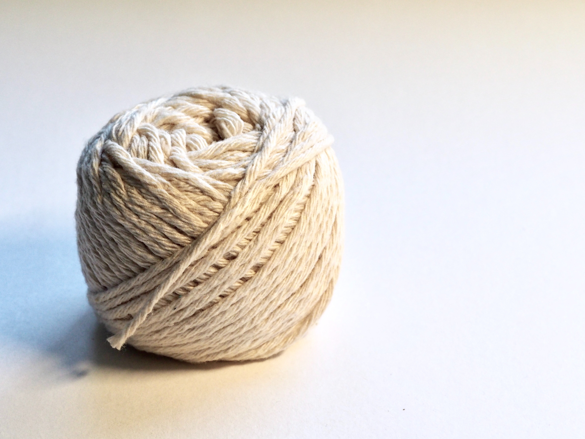
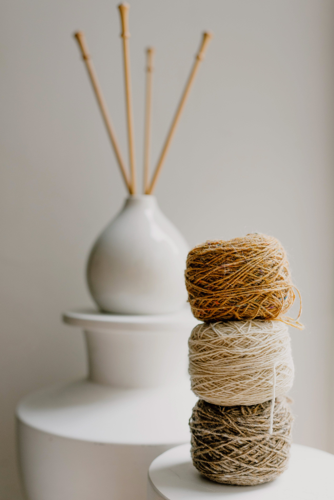

Yarn Options

Yarn One

Yarn Two

Yarn Three

Yarn Four
If you hate to knit, why, bless you, don't; follow your secret heart and take up something else. But if you start out knitting with enjoyment, you will probably continue in this pleasant path.
Go knit something!
Click the button to show how much you love knitting.